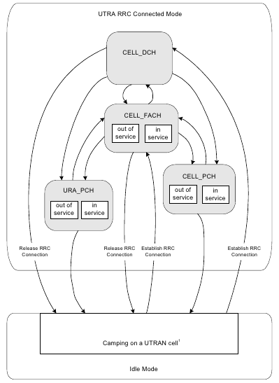

In the 3GPP TS 25.331 specification, we can query all the circuit domain statues of the RRC Layer (Radio Resource Control).
In order to simplify, we only list the third generation (3G) states:
When the handset is in this state is because it has a dedicated channel on the mobile network.
Normally the network sets a handsent into this state when it's transmitting a big amount of data.
The inactivity time of this state is really short, known as T1 timer it should vary between 5 and 20 seconds. If T1 is fired, the handset will be changed to the Cell_FACH state.
In this state the handset is connected to the mobile network using a shared channel with other handsets.
Normally, this state is assigned by the network when the handset is transmitting a small amount of data. So it's common to use it when sending keep-alive packages.
The inactivity time of this state is a little longer (30 seconds) and is konwn as T2 timer. When T2 timer is shotted, the handset will be moved to Cell_PCH or URA_PCH (depending on the type of network)
In this state the handset is not able to send any data except signalling information in order to be able to localize the handset inside the celullar network.
In both states, the RRC connection is established and open, but it's rarely used.
In this state, the handset informs the network every time the device change from one sector to another so the network is able to known exactly the BTS which is offering service to the device.
The T3 timer defines the maximum time to be in a PCH state. This timer is longer than T1 and T2 and depends on each carrier. When it's fired the handset is moved to IDLE mode so if new data transmission is needed the handset will need near 2 seconds to restablish the channel and a lot of signalling messages.
This is the most economical state since the handset radio is practically stopped.
In this state, the radio is only listening to radio messages quering the handset to "Wake Up" (paging messages).
Also, the handset modem is listening the cell data so each time it detects that the user changed from one LAC (Localization Area Code - Group of multiple BTS) to another, the handset will change to the PCH state in order to inform the network.
So when a handset is in this state, it can be Waked Up to a more active state and also the network knowns the LAC where the handset is moving, so if the network needs to inform the handset it should send a broadcast paging message through all the LAC BTS in order to locate the handset.
The following scheme represent the different radio states ordered by power comsuption on the device:
|  |